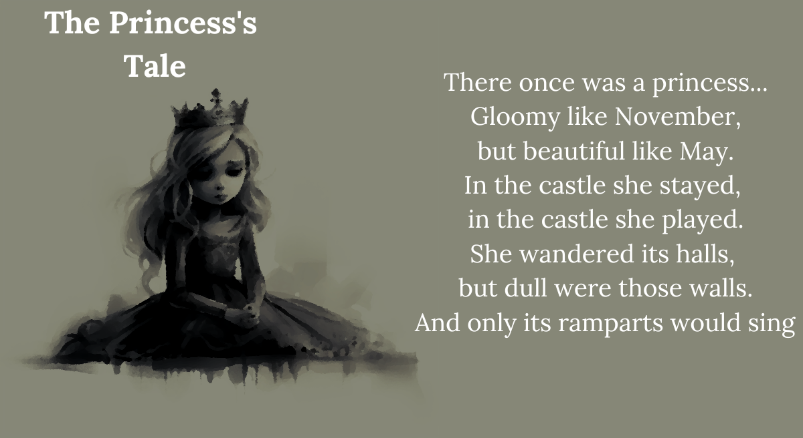
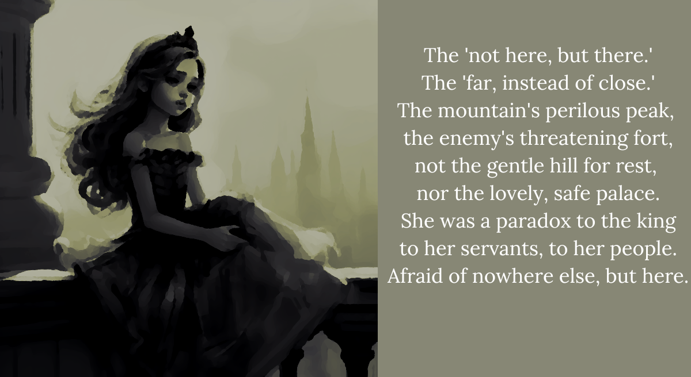

“If you review the Abyss, the Abyss replies back at you. It’s this nice little hole in the wall… of, erm, existence. Little known, and quite ‘nietzsche,’ yes. However! The owner is immensely kind. He’s all, welcome, welcome! I remember the little lady, it’s little Shiori! Just don’t leave a bad review! He’ll give you free stuff!”
― Shiori Novella on breakfast destination, The Abysstro
I feel like I had a dream of drowning, once. I was thrashing and thrashing, trying to surface, but I just kept sinking. The more I sank, the darker it got, and the more terrified I was that I’d be left alone. If I fell all the way to the bottom, would anyone ever come find me? In my dreamy, lucid-less state, I’d forgotten all about breathing or oxygen. All I could think about was the fading light of the surface. All I could see around me was the dark.
All I wanted was for someone else to be there.
Yeah… At some point, I woke up or whatever. Whenever that dream was, I don’t know, because I’ve never been able to fall asleep in this Tower. I can close my eyes here forever and never actually so much as catnap. Maybe that’s why I’m a little bit unhinged?
Going down into the dark reminded me of that dream. It’s cold here. It’s really cold here. The scary kind of cold that’s primal and just bone-chilling. But maybe it’s just me again. Constant symptoms and issues and all… I’m starting to low-key wonder if I’m actually a hypochondriac. After all, Shiori doesn’t seem ―
“AHHHH it’s so frickin’ COLD down here!” Oh. Her teeth are chattering.
“Y-you just noticed?” Oh. My teeth are chattering.
It’s actually really cold.
“Can we huddle? I’m gonna huddle. Here,” Shiori sidles backwards along the narrow stairwell a bit. “Here, ah! Aha! Yorick’s warm! You just have to shake him a bit.”
Shiori takes the poor blob off her shoulder, and starts fumbling with it, nearly dropping it a few times. An unexpected snapping noise and a soft ‘there it is,’ is followed by an unexpectedly bright indigo glow, which she then shoves between us. Wow! It really is delightfully warm.
“You’re hogging it! And you’ve got a jacket anyway!” I grab it and pull it closer to me, against my chest. Oh, it looks kind of flushed but not entirely unhappy nestling near my cleavage? Maybe it likes being used like this? “I think it likes me better than you?”
“Oh please. There’s no way that ― eh? Yorick? Come back to mommy, Yorick.” Shiori fretfully reaches toward it, but Yorick simply turns away and hugs closer into me, sidling to hide in my blouse. Now it’s Shiori’s eyes that look a little teary. They sort of look like… egg yolks. Over easy. “Eh… Ahem! W-well, distance does make the heart grow fonder as s-some might say. Now that we’re warm, let’s, um, mosey.”
So she says, but as we trek on she keeps taking these little glances backward. Did I just hear her mutter the words ‘homewrecking harlot?’ Surely just my imagination?
The stairwell widens as we enter each successive loop, and even gets a little brighter and warmer. Now it’s less depressing dungeon of death and more rarely-visited attic. The tops of shelves which make the steps of our stairway turn from regal mahogany to cheap, hollow-sounding plywood. It’s only when we enter a loop a smidge less dim that I have my ‘duh’ moment: our stairwell’s ‘ceiling’ must be shelves too. Surrounded by shelves, shelves within shelves interlinked, with only the swinging and flickering sodium-orange light bulbs to punctuate their dusty solace down here. We’re in the part of the house where the old stuff gets exiled to.
Which, I guess, makes this place like a secrets retirement home. They come here to live out the rest of their days untold and collect dust like a good secret’s supposed to. Unlike my copy of ‘She Said WHAT?!’ which looks like it’s been a mainstay on the coffee table in the dentist’s lobby.
At the end of this loop, I’m faced with something completely new. A locked door. My heart sinks. I really don’t want to play ‘Where’s Toxic Waldo?’ again.
“No, no, it’s a completely different type of puzzle,” Shiori says, reading my thoughts and perusing the shelf right next to the doorway’s handle. “There’s no need to look so scared.”
“Maybe that’s how it looks on the outside, but I’m fine.”
“Really now. Hm~. Regardless, however you feel, Yorick’s like an emotional support animal. He really is… always there for you,” she sniffles, and I think I hear her mutter ‘that little treasonous sludge,’ under her breath.
Oh, he actually is nestling closer to me. To comfort me? That’s adorable.
“Here! Yes, here it is,” Shiori pulls a somewhat tattered book from the shelf, and trots over. I do notice a surreptitious glare toward Yorick, though, and I can’t help but pet him protectively. Whatever the case, she shows me the title of the aging book.
“The Princess’s Tale?”
“Correct. Now, this is purely for our safety. I really do hate to do this to a book, but…” Shiori takes but a moment to steel herself, then she whips the book open as quickly as possible and bends the spine back in on itself. The book starts writhing and flapping and a stern woman’s voice shrieks out.
“TEWWWW MEWWW. TEWWW MEWWW! TEWWW MEWWW! TEWWW MEWW!”
Its speech is slurred just like anyone whose mouth is forcibly kept open, but it’s easy enough to make out. ‘Tell me! Tell me!’ It’s legit sickening, and something primally angry and terrified strains painfully in my heart. I hate this thing. Shiori spots my disgust as an opening, and snatches Yorick away, and I can’t help but squeak in surprise.
“Hey!”
“Oh, quiet down! I need him a moment! This is what he’s for!” Shiori rubs him along the inside of the spine and the turned-inward covers of the book, letting Yorick’s natural goop stick them together. Oh my god. She’s using him as glue.
“Stop that, he’s sensitive!” I grab him back with force, and now I’m really hugging him close. “What’s wrong with you?! This is why he’s scared!”
“Oh my good god, five minutes with him and now you’re heaven’s sweetest guardian angel.” She holds up the now barely wriggling book, its spines glued together. “This is what you call a vannaknoe. It wants to know secrets no one’s shared with it yet. If we stick it together with adhesive, then we don’t have to worry about it biting us.”
“It’s okay, it’s okay, shhhhhhh.” I ignore the abusive owner next to me. That’s right. Abusive.
“And that is…?”
“In this case, the secret is finishing the story. ‘The Princess’s Tale,’ yes? We have to finish that very tale.” She puts a finger to her lip and stares down at the ground, as if reconsidering how she’s been explaining things to this point. “Rather, we have to tell it the ‘secrets’ of what the characters within felt, in order to progress the story.”
“That sounds easy enough, but can you really call that a secret?” I ask, with more than a little skepticism. “That’s just normal writing, isn’t it?”
“Well… you’re not wrong. But think of ‘secret’ as being a genre of story. You’re in class and the teacher asks what a character’s thinking. You have to put in all the consideration yourself because the character and the author have both conspired together to keep their secrets, yes?”
“...go on.”
“Essentially, is it the lady or the tiger? You’ve read that one, yes?”
“Umm, maybe?” Have I? I feel like it’s somewhere on the edge of my memory.
“Fittingly, that one too stars a princess. And it has one central question, one secret at its heart. What’s hiding behind the door that the princess has indicated to her lover? No one can know what lurks at the end of her ‘devious mazes of passion,’ except for her and “the-thing-itself” that’s doing the lurking behind the door. Her lover certainly doesn’t know. But still he firmly trusts her and follows her hand to the door on the right.”
Shiori pantomimes the grand, clanging opening of the door, in fiction’s most medieval game show, then continues: “Is there a tiger waiting to rip him to shreds? Or a beautiful maiden who will thereon have his heart, his blushing bride, whose radiant, smug innocence will rip the princess herself to shreds?”
“That’s actually so profound, Shiori. Now, can you tell me how Yorick feels?”
“Yorick is a happy boy, and he loves facilitating our intellectual adventures,” she hisses. “Let’s just read the story and solve the frickin’ puzzle!
Second Puzzle:♘ Find your way out of the mazelike stairwell! ♘
There are many paths through the labyrinthine heart, and endless stories. But for our story, here and now, only some of those paths lead to our proper ending. Beyond the winding stairs into other infinities are other wonderful stories. But those are for another time…See if you can reach the cellar! <
 
But the queen most of all, had word for the princess,
and the princess wilted, from the rain of her tongue.
“The queen was…”
“...completely justified,” I say confidently. “The princess is a complete brat.”
Shiori bites her bottom lip thoughtfully. “Hmm, ehh… Purely as a matter of playing devil’s advocate. Purely hypothetical. I’m not certain the queen has the princess’s best interests at heart.”
“The princess has everything she wants. The queen isn’t saying anything wrong, whether or not she feels this or that about the princess.”
“Sometimes, there are things more important than being right, though,” Shiori replies. “Ohh, oh, I don’t know, I really don’t know. Do you not get a bad vibe from her?”
For some reason I feel a little miffed. “She seems a little strict. A good parent doesn’t always make you feel good.”
I hear Shiori talking to herself again, asking, ‘is that really true?’
“Yes! That is really true!” I snap.
“Eh? Ah, I mean. Yes, you’re right. There’s more to parenting than just… spoiling, of course. I’ve never been one, obviously.” She still looks rather doubtful.
“She doesn’t mean it, Yorick,” I whisper and glare at Shiori, who flinches. Now her dewy, golden eyes are sunny side down to the ground. But she squeezes them shut and faces up toward at the heavens for a moment, before drooping, letting out a sad exhale like a dying breath.
“Let’s just continue the story, shall we?” Shiori says, pulling a quill out of her jacket. “Say, don’t you think the queen looks a bit young?”
“What do you mean?”
“I mean, for her daughter to look that age, the queen doesn’t quite look old enough. Don’t you think she might be a step-mother?”
“What’s that even matter?”
“It’s a fairy tale, my naive, blissfully sweet friend. Of course, it matters,” Shiori says. The word friend sounds sort of like honey. Like someone took cold honey and tickled the inside of my ear with it. I blush a bit. Well, um. Maybe this time I’ll let Shiori write whatever she wants for the story.
The queen was…